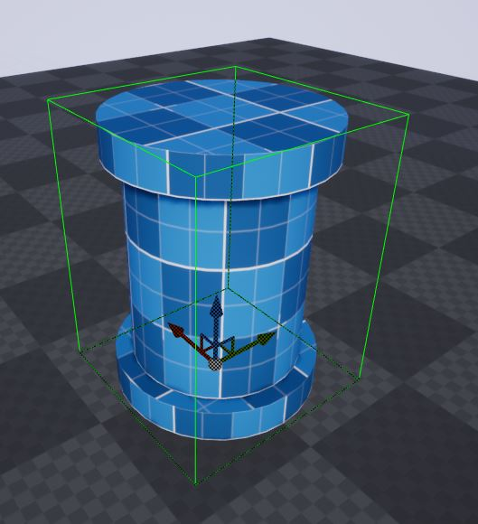
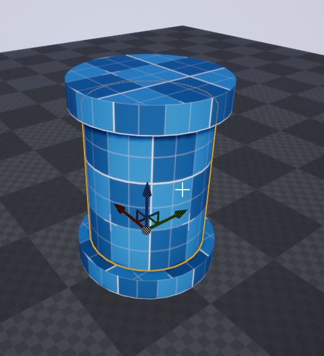
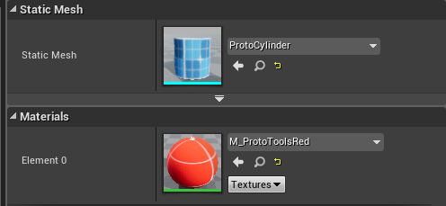
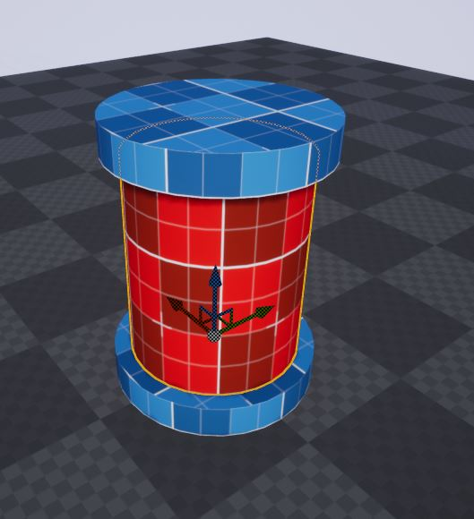
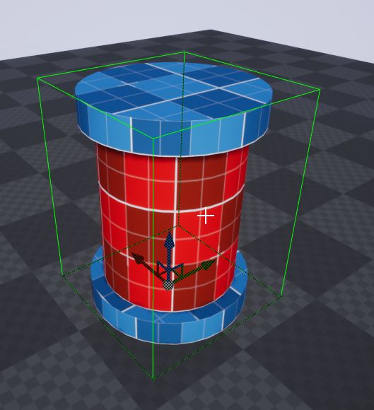
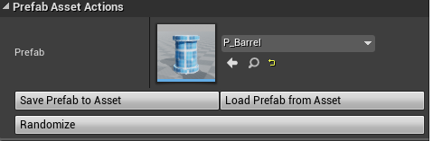
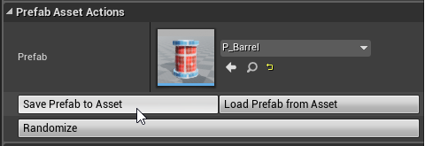
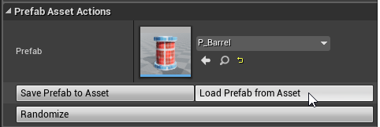
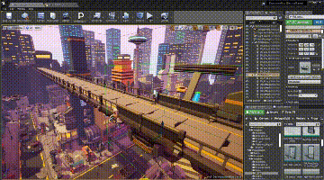

Prefab Modifications¶
Modifying Prefabs¶
A prefab can be modified after it has been created. You do this by selecting and modifying the items inside the prefab as necessary
In the following example, the barrel prefab is made up of 3 cylinders.
Select the barrel prefab by clicking on it
Click on it again to select the item inside the prefab (the center cylinder)
Modify the position or any other property of this actor. In this case, we’ll chage the material
 Saving Prefabs¶
Click on the mesh again to select the prefab actor
The prefab actor has an option to save the changes to the prefab asset
Click Save Prefab to Asset
Once saved, these changes would automatically be propagated to all the instances in the level. This also works across different maps
Restoring Prefabs¶
If you have unsaved changes on a prefab actor and would like to discard those changes and reload them from the asset file, click Load Prefab from Asset
Dynamic Updates¶
When you modify and save a prefab asset, all the existing prefabs actors in the scene will be automatically updated. This also works when you open another map that contains an older version of the prefab
Note
For optimization, this dynamic update to newer version is done only on the editor and not in runtime builds. You should open your map atleast once and save the updated static content before cooking your standalone build